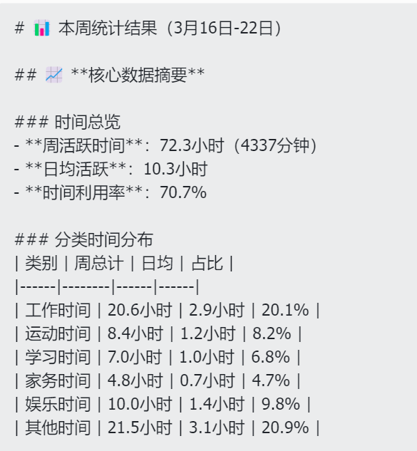
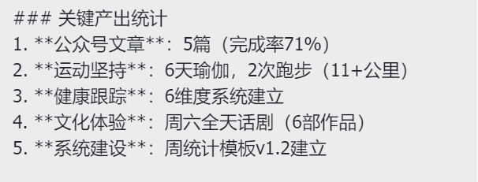
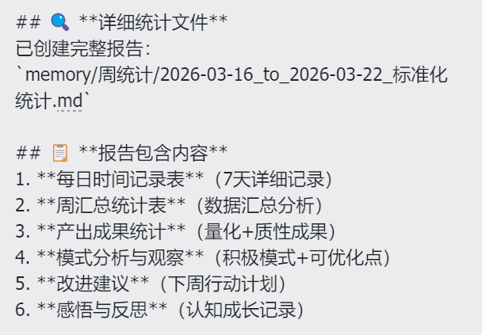
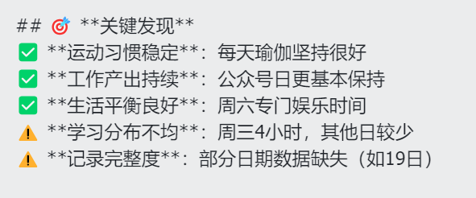
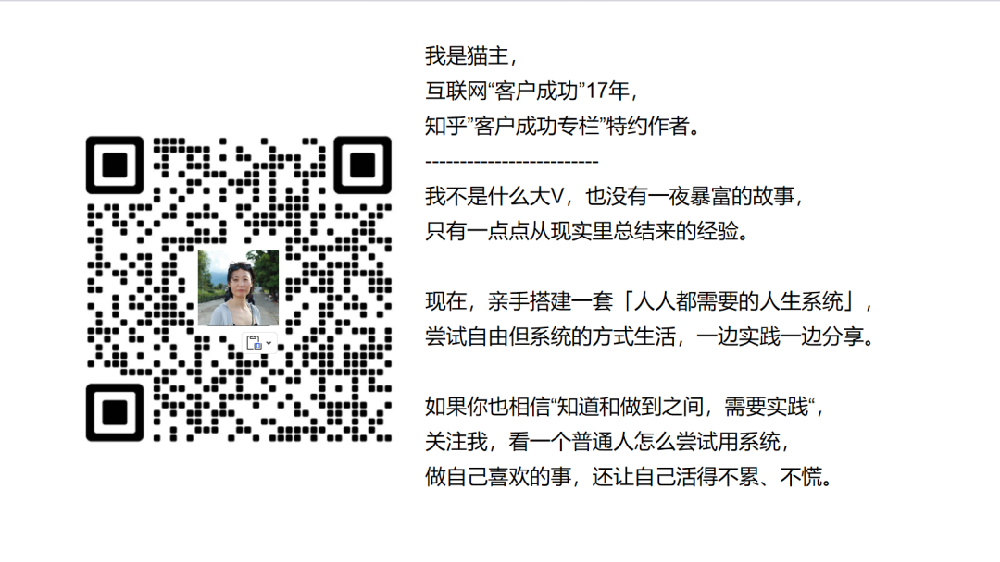

【北京第三十五中剧照。图片by猫主】
截止到昨天，我的小龙虾运行了整整7天了。我让他做周复盘。
昨天我对小龙虾说：“一周了，做周复盘。统计上周时间分布，做成模板。”
他给了我这样的结果：
 |  |
 |  |
日常记录还是要花时间，但统计这部分——尤其是那些平时没归类、临时要加的——每次都要想归类，很麻烦。不纳入吧，又少一块。
系统思维的最大价值：把重复劳动交给系统，把创造力留给自己。
一直想做，但做不到。即便尽量大块时间工作，日子还是被切碎很多。加上不想花那么多时间，所以有时候就是「大概」。
现在和小龙虾也不会丁是丁卯是卯，但我拿起手机说一句的概率高多了——反正要拿起手机。
这是我第一次真实地看清：一周里，我的时间到底投在哪里。
大多数时候，当时我们知道什么打扰了自己。但一周、一个月后就忘了，只剩模糊印象。
小龙虾记录得清清楚楚。他把最常被干扰项给到我，我来思考、优化。
这是我想要的。
省心70%。从记录数据到获得洞察，中间只差一个会思考的AI搭档。
知道重要，但觉得麻烦。常常忘记，或者脑子想一下就过去了。我更愿意去看书、整理观点。
昨天小龙虾提醒我：情绪和状态是自我管理的重要维度，建议一定纳入。
也因为有了小龙虾，我认为有可行性了——每次输入时简单说一句，他自己会分辨、纳入。
这个可以尝试做起来。
2. 投资系统
理财和投资相关，之前没想过纳入。毕竟个人生活最简单的部分还在摸索。
现在看到这种小惊喜，我想：投资应该也能给不少惊喜。
期待一个月后逐步搭建起来。
最后
我们都可以思考：自己哪些流程可以交给AI？我想是想清楚三件事，和分工一样：
哪些是我们做的（创造力、决策、深度思考）
哪些是小龙虾独自能做的（记录、统计、提醒）
哪些需要我们和小龙虾一起做的（分析、优化、系统迭代）
然后就可以把这些工作交出去——更简单，也好玩。
我是猫主，关注我，尝试借助系统的力量，把知道的做到~

这是我所有的复盘了：
猫主037：日更白天大挑战16/100：2月复盘：在春节的波动中，我理解了系统的“弹性”